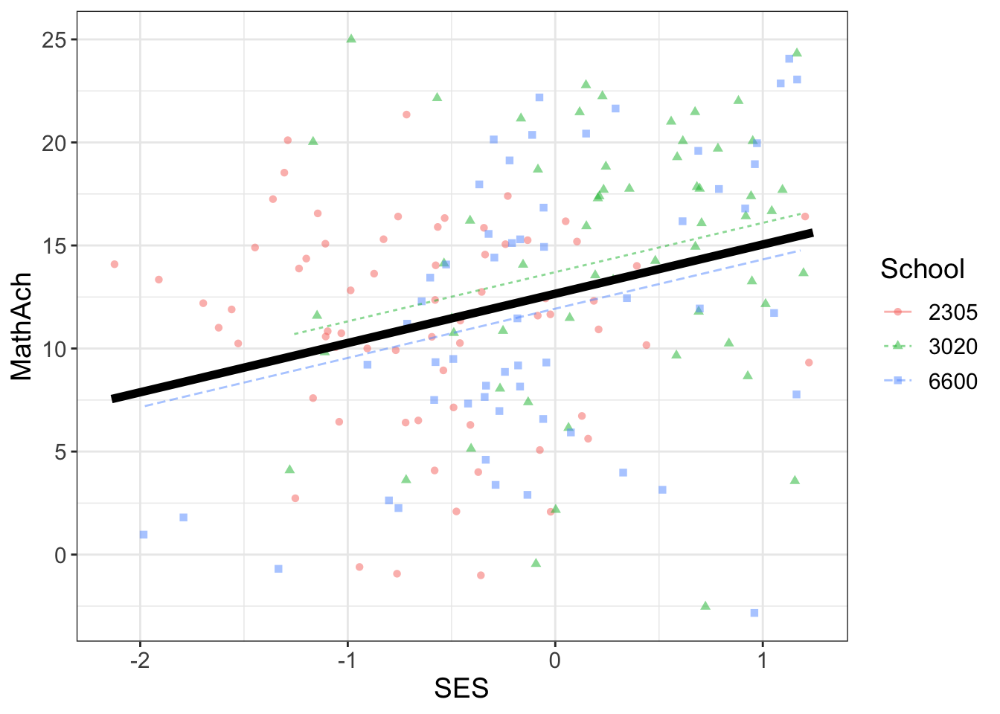
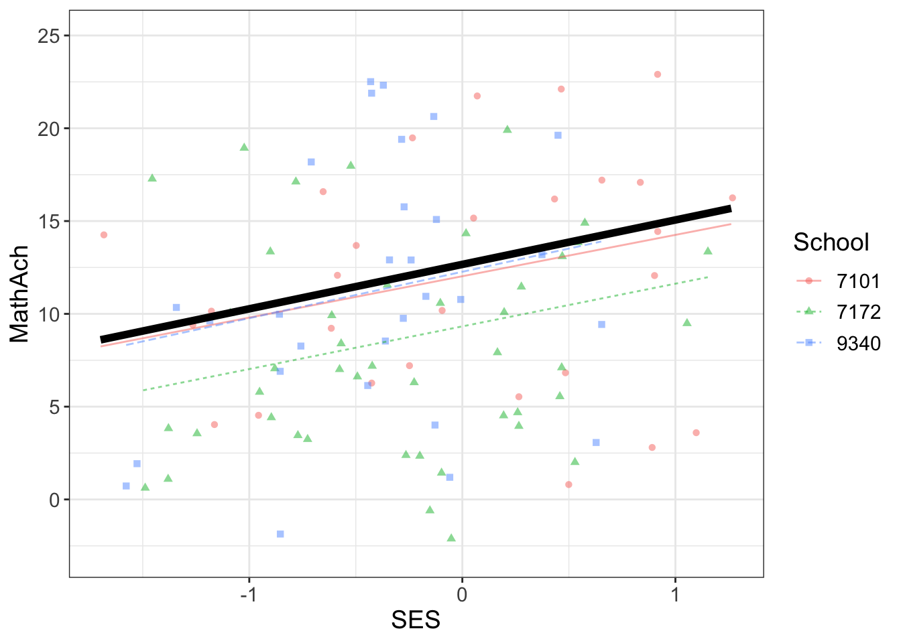
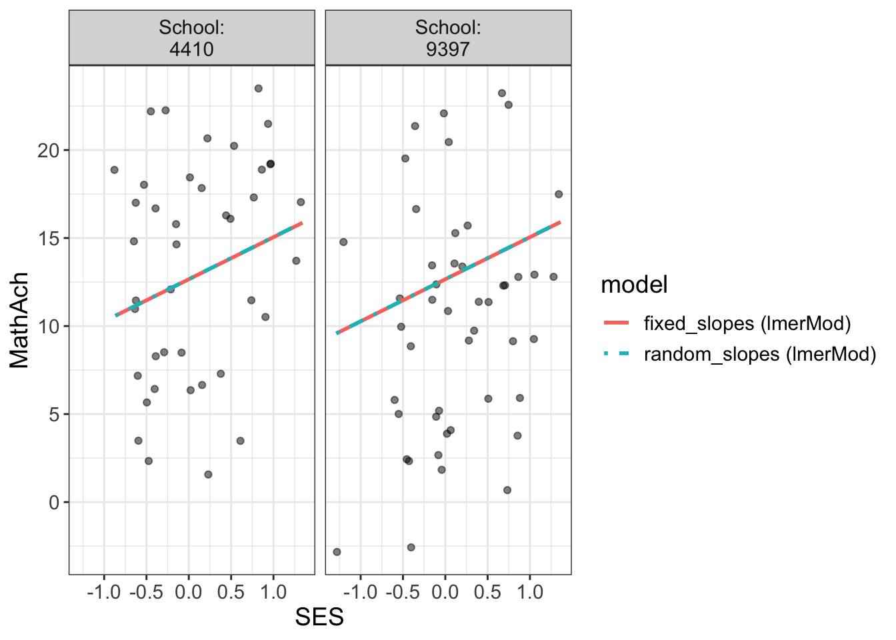
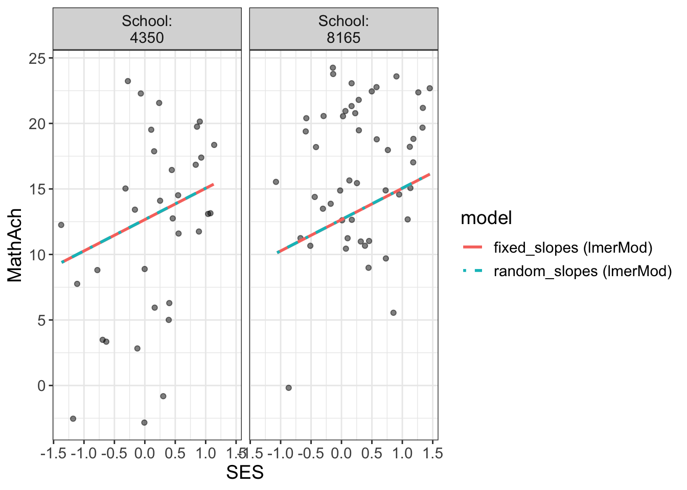
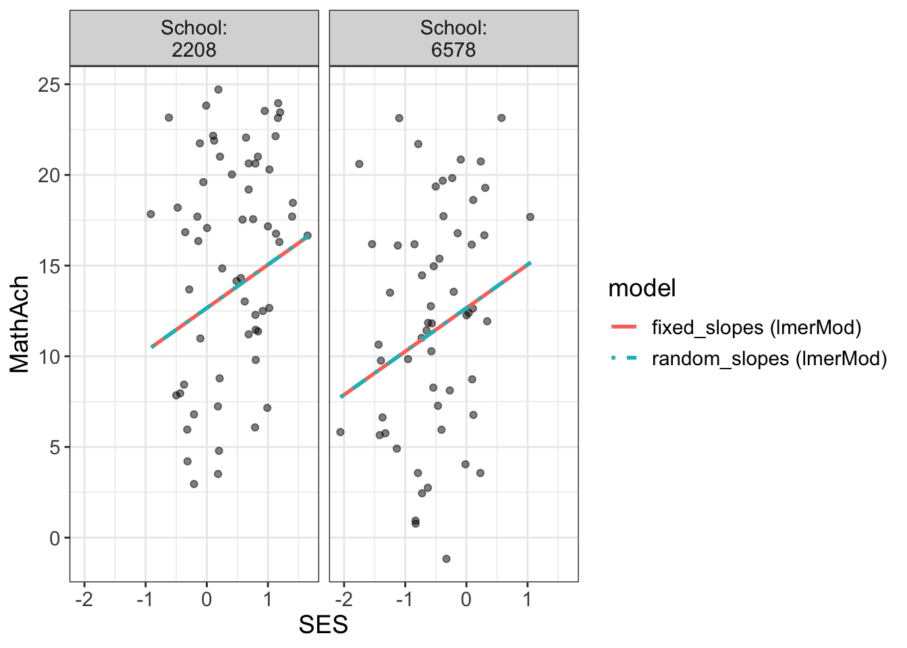
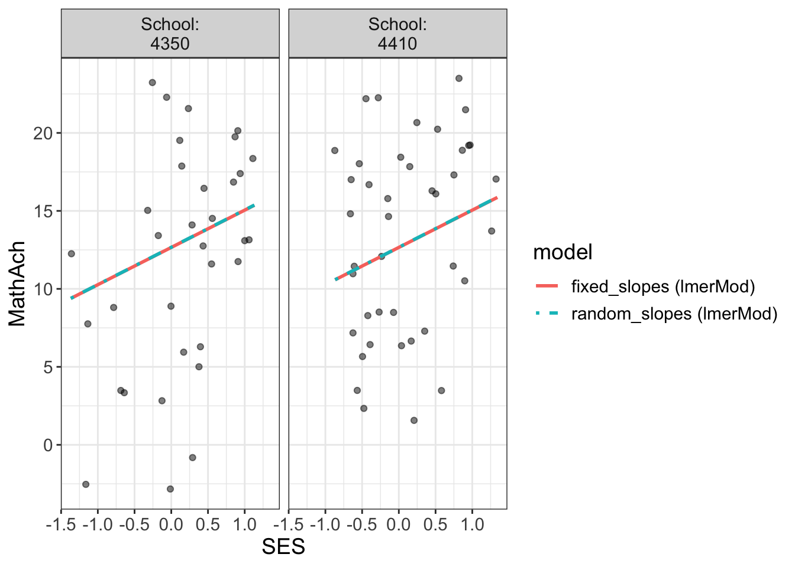
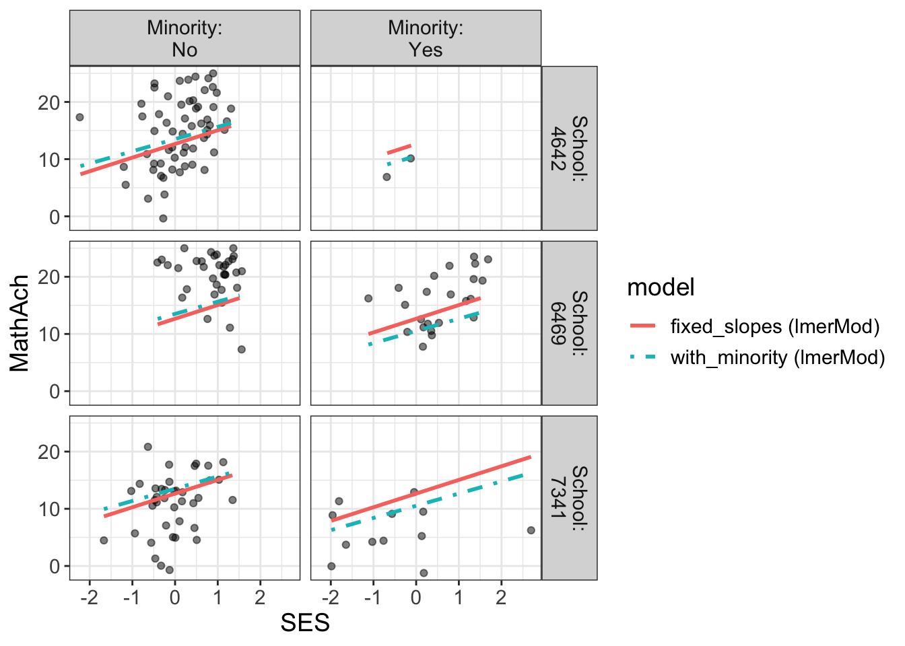

What proportion of variability (variance) in the model is due to cluster effects
Example #3
require(flexplot)
Loading required package: flexplot
require(lme4)
Loading required package: lme4
Loading required package: Matrix
require(dplyr)
Loading required package: dplyr
Attaching package: 'dplyr'
The following objects are masked from 'package:stats':
filter, lag
The following objects are masked from 'package:base':
intersect, setdiff, setequal, union
#require(ggplot2)
Fit a baseline and compute ICC
data(math)baseline <-lmer(MathAch~1+ (1|School), data=math) # ICC is var(school)/ ( var(school) + var(person) ) # e.g. when school and person vars are equal ICC is 0.5# Increasing person var relative to school pushes toward 1 # ICC runs 0 to 1# ICC = 0 means perfectly independant # rising ICC towards 1 (or 100%) is towards non-independant# This function extracts the necessary variances from the mixed model and computes ICC.# Digging in the icc() function one can see it uses lme4 function VarrCorr to get variances.## VarCorr {lme4} Extract Variance and Correlation Components# This function calculates the estimated variances, standard deviations, and correlations # between the random-effects terms in a mixed-effects model, of class merMod (linear, # generalized or nonlinear). The within-group error variance and standard deviation are also # calculated.## Digging: In this case try, # str(as.data.frame(VarCorr(baseline))# grp : chr "School" "Residual"# ..# vcov : num 8.61 39.15# # ICC is ~ 8.61 / (8.61 + 39.15) = 0.1802764# vcov is "variances or covariances"# Using MathAch var by school from model fit# calculating directly, gives different numbers# grp_school <- math %>% group_by(School) %>% summarise(mean_MathAch = mean(MathAch)) # var(grp_school$mean_MathAch) # 9.71975# var(math$MathAch)# 47.31026# # so, perhaps ICC in this case is better expressed as..understood by me as...# from the model fit# var(MathAch by school)/ ( var(MathAch by school) + var(MathAch disregarding School) ) icc(baseline)
$icc
[1] 0.1803518
$design.effect
[1] 8.918571
visualize(baseline, plot="model")
Coordinate system already present. Adding new coordinate system, which will
replace the existing one.
Comments
18% cluster effects
my plot doesn’t show the random effects despite the model being identical to DFs
# fixed_slopes is probably bettersummary(fixed_slopes)
Linear mixed model fit by REML ['lmerMod']
Formula: MathAch ~ SES + (1 | School)
Data: math
REML criterion at convergence: 46645.2
Scaled residuals:
Min 1Q Median 3Q Max
-3.12607 -0.72720 0.02188 0.75772 2.91912
Random effects:
Groups Name Variance Std.Dev.
School (Intercept) 4.768 2.184
Residual 37.034 6.086
Number of obs: 7185, groups: School, 160
Fixed effects:
Estimate Std. Error t value
(Intercept) 12.6575 0.1880 67.33
SES 2.3902 0.1057 22.61
Correlation of Fixed Effects:
(Intr)
SES 0.003
# genrally categorical vars are fixed effectswith_minority =lmer(MathAch~SES + Minority + (SES|School), data=math)compare.fits(MathAch~SES | Minority + School, data=math, with_minority, fixed_slopes)
`geom_line()`: Each group consists of only one observation.
ℹ Do you need to adjust the group aesthetic?
Linear mixed model fit by REML ['lmerMod']
Formula: MathAch ~ SES + Minority + (SES | School)
Data: math
REML criterion at convergence: 46443
Scaled residuals:
Min 1Q Median 3Q Max
-3.1742 -0.7243 0.0283 0.7577 3.0047
Random effects:
Groups Name Variance Std.Dev. Corr
School (Intercept) 3.9362 1.9840
SES 0.3187 0.5645 -0.40
Residual 35.9967 5.9997
Number of obs: 7185, groups: School, 160
Fixed effects:
Estimate Std. Error t value
(Intercept) 13.5047 0.1827 73.92
SES 2.1326 0.1156 18.44
MinorityYes -2.9782 0.2081 -14.31
Correlation of Fixed Effects:
(Intr) SES
SES -0.194
MinorityYes -0.307 0.173
Comments
Akaike information criterion (AIC)
Bayesian information criterion (BIC) or Schwarz information criterion (also SIC, SBC, SBIC)
Looking at summary(with_minority), the model parameters are pretty similar to Example #2 - the standard linear model (lm2 <- lm(MathAch ~ SES + Minority, data = math))
# software library update# estimates() has become available# explain of dessign.effect - artificail infaltion estimates(with_minority)
refitting model(s) with ML (instead of REML)
Fixed Effects:
(Intercept) SES MinorityYes
13.504724 2.132604 -2.978157
Random Effects:
Groups Name Std.Dev. Corr
School (Intercept) 1.9840
SES 0.5645 -0.400
Residual 5.9997
ICC and Design Effect:
icc design.effect
0.1803518 8.9185709
R Squared:
Residual (Intercept)
0.08050517 0.54305152
Comments






